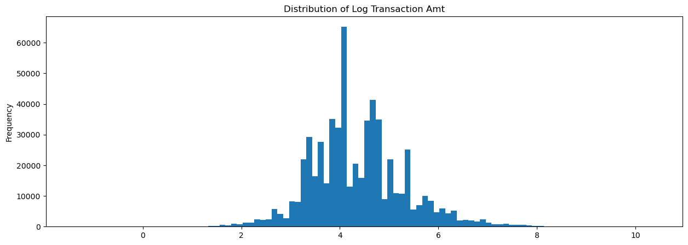
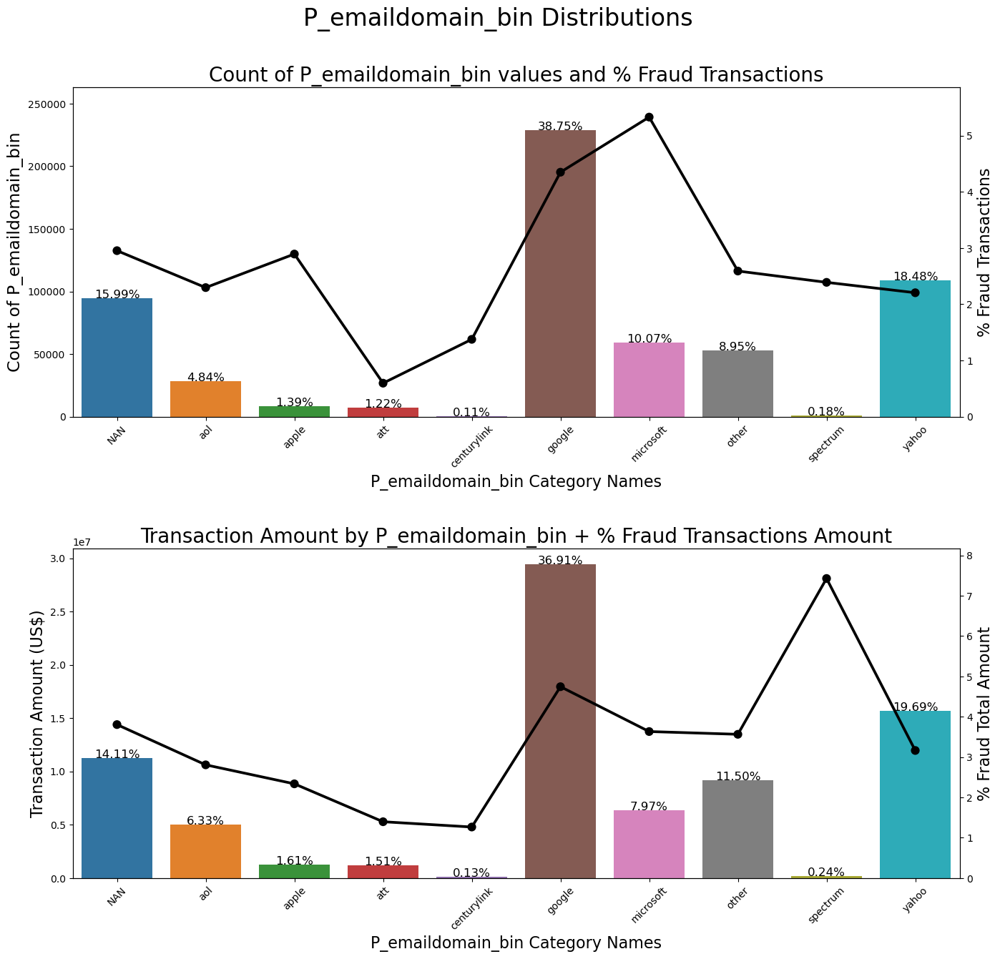
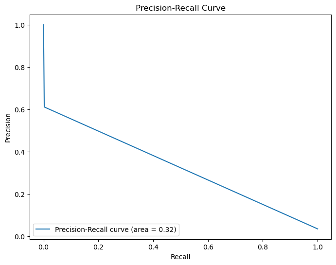
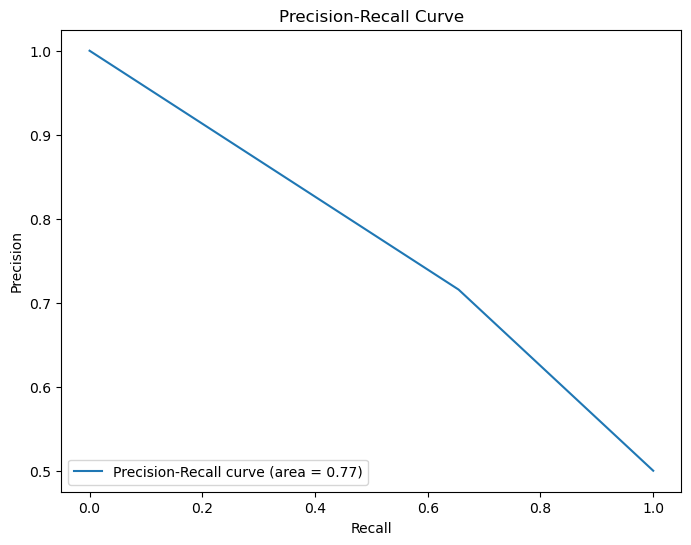

Code
import pandas as pd
import numpy as np
from scipy import stats
import matplotlib.pyplot as plt
import seaborn as sns
import datetimeThis data analytics project revolves around enhancing fraud detection in online financial transactions, a critical business use case vital for both consumers and businesses. The significance lies in the escalating threat of fraudulent activities within e-commerce, leading to substantial financial losses for businesses and potential security risks for consumers.
Our primary focus is to leverage a comprehensive dataset sourced from Vesta Corporation, a leading payment service company, to develop and refine machine learning models aimed at accurately distinguishing between legitimate and fraudulent transactions.
The original evaluation metric for this Kaggle competition is ROC AUC; however, due to the imbalance data problem (shown in isFruad section), I think it’s better to use Precision-Recall Curve AUC as the evaluation metric. Let’s talk about why.
ROC curve uses True Positive Rate (TPR) and False Positive Rate (FPR) as y-axis and x-axis.
TPR indicates the model’s ability to distinguish postive data; FPR indicates the model’s ability to distinguish negative data. Thus, ROC curve shows the overall ability to distinguish postive and negative classes.
However, in imbalance dataset with small amount of TP, TNR is not what we care about.

|
Precision-Recall curve uses Precision and Recall as y-axis and x-axis.
Recall indicates the model’s ability to distinguish postive data; Precision indicates how many of the predicted positive cases are actually positive. Thus, Precision-Recall curve shows the overall ability to find as many as positive cases and also with a precise prediction.
Given our imbalanced dataset with a small number of TP and considering the real-world scenario of monitoring fraudulent transactions, utilizing the Precision-Recall curve would be prudent as it specifically emphasizes TP.
import pandas as pd
import numpy as np
from scipy import stats
import matplotlib.pyplot as plt
import seaborn as sns
import datetime#for modeling
from sklearn.linear_model import LogisticRegression
from sklearn.metrics import precision_recall_curve, f1_score, auc, accuracy_score, confusion_matrix
from sklearn.preprocessing import OneHotEncoder, StandardScaler
from sklearn.compose import ColumnTransformer
from sklearn.pipeline import Pipeline
from sklearn.utils import resample
from sklearn.tree import DecisionTreeClassifier
from xgboost import XGBClassifier
import xgboost as xgb
# for hyperparameter tunning
from hyperopt import hp
from sklearn.model_selection import TimeSeriesSplit, GridSearchCVimport warnings
# Ignore all warnings
warnings.filterwarnings("ignore")# Function to reduce the DF size
def reduce_mem_usage(df, verbose=True):
numerics = ['int16', 'int32', 'int64', 'float16', 'float32', 'float64']
start_mem = df.memory_usage().sum() / 1024**2
for col in df.columns:
col_type = df[col].dtypes
if col_type in numerics:
c_min = df[col].min()
c_max = df[col].max()
if str(col_type)[:3] == 'int':
if c_min > np.iinfo(np.int8).min and c_max < np.iinfo(np.int8).max:
df[col] = df[col].astype(np.int8)
elif c_min > np.iinfo(np.int16).min and c_max < np.iinfo(np.int16).max:
df[col] = df[col].astype(np.int16)
elif c_min > np.iinfo(np.int32).min and c_max < np.iinfo(np.int32).max:
df[col] = df[col].astype(np.int32)
elif c_min > np.iinfo(np.int64).min and c_max < np.iinfo(np.int64).max:
df[col] = df[col].astype(np.int64)
else:
if c_min > np.finfo(np.float16).min and c_max < np.finfo(np.float16).max:
df[col] = df[col].astype(np.float16)
elif c_min > np.finfo(np.float32).min and c_max < np.finfo(np.float32).max:
df[col] = df[col].astype(np.float32)
else:
df[col] = df[col].astype(np.float64)
end_mem = df.memory_usage().sum() / 1024**2
if verbose: print('Mem. usage decreased to {:5.2f} Mb ({:.1f}% reduction)'.format(end_mem, 100 * (start_mem - end_mem) / start_mem))
return df
#summary of the dataframe
def resumetable(df, columns):
print(f"Dataset Shape: {df.shape}")
summary = pd.DataFrame(df[columns].dtypes, columns=['dtypes'])
summary = summary.reset_index()
summary['Name'] = summary['index']
summary = summary[['Name', 'dtypes']]
summary['Missing'] = df[columns].isnull().sum().values
summary['Uniques'] = df[columns].nunique().values
summary['First Value'] = df[columns].iloc[0].values
summary['Second Value'] = df[columns].iloc[1].values
summary['Third Value'] = df[columns].iloc[2].values
return summary
#plot two charts to perform in-depth analysis on different categorical columns
#The top section (subplot 1) presents a count plot, illustrating the frequency of occurrences for each category and the corresponding percentage of fraudulent transactions. The bottom section (subplot 2) offers a bar plot depicting the total transaction amounts across different categories, coupled with the percentage of fraudulent transaction amounts.
def ploting_cnt_amt(df, col, lim=2000):
tmp = pd.crosstab(df[col], df['isFraud'], normalize='index') * 100
tmp = tmp.reset_index()
tmp.rename(columns={0:'NoFraud', 1:'Fraud'}, inplace=True)
plt.figure(figsize=(16,14))
plt.suptitle(f'{col} Distributions ', fontsize=24)
plt.subplot(211)
g = sns.countplot( x=col, data=df, order=list(tmp[col].values))
gt = g.twinx()
gt = sns.pointplot(x=col, y='Fraud', data=tmp, order=list(tmp[col].values),
color='black')
gt.set_ylim(0,tmp['Fraud'].max()*1.1)
gt.set_ylabel("% Fraud Transactions", fontsize=16)
g.set_title(f"Count of {col} values and % Fraud Transactions", fontsize=20)
g.set_xlabel(f"{col} Category Names", fontsize=16)
g.set_ylabel(f"Count of {col}", fontsize=17)
g.set_xticklabels(g.get_xticklabels(),rotation=45)
sizes = []
for p in g.patches:
height = p.get_height()
sizes.append(height)
g.text(p.get_x()+p.get_width()/2.,
height + 3,
'{:1.2f}%'.format(height/total*100),
ha="center",fontsize=12)
g.set_ylim(0,max(sizes)*1.15)
#########################################################################
perc_amt = (df.groupby(['isFraud',col])['TransactionAmt'].sum() \
/ df.groupby([col])['TransactionAmt'].sum() * 100).unstack('isFraud')
perc_amt = perc_amt.reset_index()
perc_amt.rename(columns={0:'NoFraud', 1:'Fraud'}, inplace=True)
amt = df.groupby([col])['TransactionAmt'].sum().reset_index()
perc_amt = perc_amt.fillna(0)
plt.subplot(212)
g1 = sns.barplot(x=col, y='TransactionAmt',
data=amt,
order=list(tmp[col].values))
g1t = g1.twinx()
g1t = sns.pointplot(x=col, y='Fraud', data=perc_amt,
order=list(tmp[col].values),
color='black')
g1t.set_ylim(0,perc_amt['Fraud'].max()*1.1)
g1t.set_ylabel("% Fraud Total Amount", fontsize=16)
g.set_xticklabels(g.get_xticklabels(),rotation=45)
g1.set_title(f"Transaction Amount by {col} + % Fraud Transactions Amount", fontsize=20)
g1.set_xlabel(f"{col} Category Names", fontsize=16)
g1.set_ylabel("Transaction Amount (US$)", fontsize=16)
g1.set_xticklabels(g.get_xticklabels(),rotation=45)
for p in g1.patches:
height = p.get_height()
g1.text(p.get_x()+p.get_width()/2.,
height + 3,
'{:1.2f}%'.format(height/total_amt*100),
ha="center",fontsize=12)
plt.subplots_adjust(hspace=.4, top = 0.9)
plt.show()
# calculate missing value percentage for a column
def calculate_missing_percentage(df, column_name):
missing_values = df[column_name].isnull().sum()
total_rows = df.shape[0]
missing_pct = round(missing_values / total_rows * 100, 2)
print(f"Missing value percentage for {column_name}: {missing_pct}%")# For modeling
# group low frequency categorical values to avoid high dimensionality after performing one hot encoding
def group_low_percentage_values(df, column, threshold=1, new_category='others'):
result = df[column].value_counts(normalize=True) * 100
values_to_group = result[result < threshold].index.tolist()
df[column] = df[column].apply(lambda x: new_category if x in values_to_group else x)
return df
# since we're using time related data, it's better to split by date rather than traditional train test split
def split_data_by_date(X_transformed, y, train_date, test_date):
x_train, y_train = X_transformed.loc[:train_date], y.loc[:train_date]
x_test, y_test = X_transformed.loc[test_date:], y.loc[test_date:]
return x_train, y_train, x_test, y_test
# upsampling for minor class
def upsample_minority_class(X, target_column='isFraud', random_state=27):
not_fraud = X[X[target_column] == 0]
fraud = X[X[target_column] == 1]
# Upsample minority class
fraud_upsampled = resample(fraud,
replace=True,
n_samples=len(not_fraud),
random_state=random_state)
# Combine majority and upsampled minority
upsampled = pd.concat([not_fraud, fraud_upsampled])
return upsampled
def evaluate_results(y_true, y_pred):
# F1 Score
f1 = f1_score(y_true, y_pred)
print(f"F1 Score: {f1}")
# Confusion matrix
conf_matrix = confusion_matrix(y_true, y_pred)
print("Confusion Matrix:")
print(conf_matrix)
# Precision Recall
# Calculate Precision and Recall
TN, FP, FN, TP = conf_matrix.ravel()
precision = TP / (TP + FP)
recall = TP / (TP + FN)
print(f"Precision is {round(precision*100)} %; Recall is {round(recall*100)} %")
# Precision-Recall Curve
precision, recall, thresholds = precision_recall_curve(y_true, y_pred)
pr_rc_auc = auc(recall, precision)
print(f"PR-RC AUC: {pr_rc_auc}")
# Plot Precision-Recall Curve
plt.figure(figsize=(8, 6))
plt.plot(recall, precision, label='Precision-Recall curve (area = %0.2f)' % pr_rc_auc)
plt.xlabel('Recall')
plt.ylabel('Precision')
plt.title('Precision-Recall Curve')
plt.legend(loc='lower left')
plt.show()
# conclusion
TP_rate = round(TP/(FN+TP)*100)
FP_rate = round(FP/(FP+TN)*100)
precision = TP / (TP + FP)
print(f"Can capture {TP_rate} % of fraud transactions and the prediction precision is {round(precision*100)} %. {FP_rate} % of non-fraud transactions are misclassified")
transaction = pd.read_csv('data/train_transaction.csv')
identity = pd.read_csv('data/train_identity.csv')transaction_cols = list(transaction.columns)
print(transaction_cols)['TransactionID', 'isFraud', 'TransactionDT', 'TransactionAmt', 'ProductCD', 'card1', 'card2', 'card3', 'card4', 'card5', 'card6', 'addr1', 'addr2', 'dist1', 'dist2', 'P_emaildomain', 'R_emaildomain', 'C1', 'C2', 'C3', 'C4', 'C5', 'C6', 'C7', 'C8', 'C9', 'C10', 'C11', 'C12', 'C13', 'C14', 'D1', 'D2', 'D3', 'D4', 'D5', 'D6', 'D7', 'D8', 'D9', 'D10', 'D11', 'D12', 'D13', 'D14', 'D15', 'M1', 'M2', 'M3', 'M4', 'M5', 'M6', 'M7', 'M8', 'M9', 'V1', 'V2', 'V3', 'V4', 'V5', 'V6', 'V7', 'V8', 'V9', 'V10', 'V11', 'V12', 'V13', 'V14', 'V15', 'V16', 'V17', 'V18', 'V19', 'V20', 'V21', 'V22', 'V23', 'V24', 'V25', 'V26', 'V27', 'V28', 'V29', 'V30', 'V31', 'V32', 'V33', 'V34', 'V35', 'V36', 'V37', 'V38', 'V39', 'V40', 'V41', 'V42', 'V43', 'V44', 'V45', 'V46', 'V47', 'V48', 'V49', 'V50', 'V51', 'V52', 'V53', 'V54', 'V55', 'V56', 'V57', 'V58', 'V59', 'V60', 'V61', 'V62', 'V63', 'V64', 'V65', 'V66', 'V67', 'V68', 'V69', 'V70', 'V71', 'V72', 'V73', 'V74', 'V75', 'V76', 'V77', 'V78', 'V79', 'V80', 'V81', 'V82', 'V83', 'V84', 'V85', 'V86', 'V87', 'V88', 'V89', 'V90', 'V91', 'V92', 'V93', 'V94', 'V95', 'V96', 'V97', 'V98', 'V99', 'V100', 'V101', 'V102', 'V103', 'V104', 'V105', 'V106', 'V107', 'V108', 'V109', 'V110', 'V111', 'V112', 'V113', 'V114', 'V115', 'V116', 'V117', 'V118', 'V119', 'V120', 'V121', 'V122', 'V123', 'V124', 'V125', 'V126', 'V127', 'V128', 'V129', 'V130', 'V131', 'V132', 'V133', 'V134', 'V135', 'V136', 'V137', 'V138', 'V139', 'V140', 'V141', 'V142', 'V143', 'V144', 'V145', 'V146', 'V147', 'V148', 'V149', 'V150', 'V151', 'V152', 'V153', 'V154', 'V155', 'V156', 'V157', 'V158', 'V159', 'V160', 'V161', 'V162', 'V163', 'V164', 'V165', 'V166', 'V167', 'V168', 'V169', 'V170', 'V171', 'V172', 'V173', 'V174', 'V175', 'V176', 'V177', 'V178', 'V179', 'V180', 'V181', 'V182', 'V183', 'V184', 'V185', 'V186', 'V187', 'V188', 'V189', 'V190', 'V191', 'V192', 'V193', 'V194', 'V195', 'V196', 'V197', 'V198', 'V199', 'V200', 'V201', 'V202', 'V203', 'V204', 'V205', 'V206', 'V207', 'V208', 'V209', 'V210', 'V211', 'V212', 'V213', 'V214', 'V215', 'V216', 'V217', 'V218', 'V219', 'V220', 'V221', 'V222', 'V223', 'V224', 'V225', 'V226', 'V227', 'V228', 'V229', 'V230', 'V231', 'V232', 'V233', 'V234', 'V235', 'V236', 'V237', 'V238', 'V239', 'V240', 'V241', 'V242', 'V243', 'V244', 'V245', 'V246', 'V247', 'V248', 'V249', 'V250', 'V251', 'V252', 'V253', 'V254', 'V255', 'V256', 'V257', 'V258', 'V259', 'V260', 'V261', 'V262', 'V263', 'V264', 'V265', 'V266', 'V267', 'V268', 'V269', 'V270', 'V271', 'V272', 'V273', 'V274', 'V275', 'V276', 'V277', 'V278', 'V279', 'V280', 'V281', 'V282', 'V283', 'V284', 'V285', 'V286', 'V287', 'V288', 'V289', 'V290', 'V291', 'V292', 'V293', 'V294', 'V295', 'V296', 'V297', 'V298', 'V299', 'V300', 'V301', 'V302', 'V303', 'V304', 'V305', 'V306', 'V307', 'V308', 'V309', 'V310', 'V311', 'V312', 'V313', 'V314', 'V315', 'V316', 'V317', 'V318', 'V319', 'V320', 'V321', 'V322', 'V323', 'V324', 'V325', 'V326', 'V327', 'V328', 'V329', 'V330', 'V331', 'V332', 'V333', 'V334', 'V335', 'V336', 'V337', 'V338', 'V339']Transaction columns description:
identity_cols = list(identity.columns)
print(identity_cols)['TransactionID', 'id_01', 'id_02', 'id_03', 'id_04', 'id_05', 'id_06', 'id_07', 'id_08', 'id_09', 'id_10', 'id_11', 'id_12', 'id_13', 'id_14', 'id_15', 'id_16', 'id_17', 'id_18', 'id_19', 'id_20', 'id_21', 'id_22', 'id_23', 'id_24', 'id_25', 'id_26', 'id_27', 'id_28', 'id_29', 'id_30', 'id_31', 'id_32', 'id_33', 'id_34', 'id_35', 'id_36', 'id_37', 'id_38', 'DeviceType', 'DeviceInfo']Identity columns description:
Numerous columns, including C1-C14, D1-D15, M1-M9, Vxxx, and id, obscure their true meanings. To derive meaningful business conclusions and recommendations, my focus will be on those explainable columns.
## REducing memory
df_trans = reduce_mem_usage(transaction)
df_id = reduce_mem_usage(identity)Mem. usage decreased to 542.35 Mb (69.4% reduction)
Mem. usage decreased to 25.86 Mb (42.7% reduction)resumetable(df_trans, df_trans.columns.tolist())[:10]Dataset Shape: (590540, 394)| Name | dtypes | Missing | Uniques | First Value | Second Value | Third Value | |
|---|---|---|---|---|---|---|---|
| 0 | TransactionID | int32 | 0 | 590540 | 2987000 | 2987001 | 2987002 |
| 1 | isFraud | int8 | 0 | 2 | 0 | 0 | 0 |
| 2 | TransactionDT | int32 | 0 | 573349 | 86400 | 86401 | 86469 |
| 3 | TransactionAmt | float16 | 0 | 8195 | 68.5 | 29.0 | 59.0 |
| 4 | ProductCD | object | 0 | 5 | W | W | W |
| 5 | card1 | int16 | 0 | 13553 | 13926 | 2755 | 4663 |
| 6 | card2 | float16 | 8933 | 500 | NaN | 404.0 | 490.0 |
| 7 | card3 | float16 | 1565 | 114 | 150.0 | 150.0 | 150.0 |
| 8 | card4 | object | 1577 | 4 | discover | mastercard | visa |
| 9 | card5 | float16 | 4259 | 119 | 142.0 | 102.0 | 166.0 |
TransactionID has 590540 unique values, which is the same as df_trans’s rows, so that we can confirm TransactionID is a valid primary key.
The fraudulent transactions, both in count and total amount, represent only a small portion of the overall transactions. This suggests an imbalance in the data, which is an issue we should consider when building models.
df_trans['TransactionAmt'] = df_trans['TransactionAmt'].astype(float)
total = len(df_trans)
total_amt = df_trans.groupby(['isFraud'])['TransactionAmt'].sum().sum()
plt.figure(figsize=(16,6))
plt.subplot(121)
g = sns.countplot(x='isFraud', data=df_trans, )
g.set_title("Count of Transaction", fontsize=22)
g.set_xlabel("Is fraud?", fontsize=18)
g.set_ylabel('Count', fontsize=18)
for p in g.patches:
height = p.get_height()
g.text(p.get_x()+p.get_width()/2.,
height,
'{:1.2f}%'.format(height/total*100),
ha="center", fontsize=15)
perc_amt = (df_trans.groupby(['isFraud'])['TransactionAmt'].sum())
perc_amt = perc_amt.reset_index()
plt.subplot(122)
g1 = sns.barplot(x='isFraud', y='TransactionAmt', dodge=True, data=perc_amt)
g1.set_title("Transaction Amount", fontsize=22)
g1.set_xlabel("Is fraud?", fontsize=18)
g1.set_ylabel('Total Transaction Amount Scalar', fontsize=18)
for p in g1.patches:
height = p.get_height()
g1.text(p.get_x()+p.get_width()/2.,
height + 3,
'{:1.2f}%'.format(height/total_amt * 100),
ha="center", fontsize=15)
plt.show()
resumetable(df_trans, ["TransactionDT"])Dataset Shape: (590540, 394)| Name | dtypes | Missing | Uniques | First Value | Second Value | Third Value | |
|---|---|---|---|---|---|---|---|
| 0 | TransactionDT | int32 | 0 | 573349 | 86400 | 86401 | 86469 |
Looking at the first, second and third value, it appears that the TransactionDT is structured in a format resembling a time delta measured in seconds. Let’s delve deeper into this for further exploration.
TransactionDT_min = df_trans['TransactionDT'].min()
TransactionDT_max = df_trans['TransactionDT'].max()
convert_to_days = 24*60*60
TransactionDT_range = (TransactionDT_max-TransactionDT_min)/convert_to_days
print(f"Min TransactionDT:{TransactionDT_min}; Max TransactionDT:{TransactionDT_max}")
print(f"TransactionDT Range (days):{TransactionDT_range}")
print("The range of TransactionDT is about half a year.")Min TransactionDT:86400; Max TransactionDT:15811131
TransactionDT Range (days):181.99920138888888
The range of TransactionDT is about half a year.START_DATE = '2017-12-01'
startdate = datetime.datetime.strptime(START_DATE, "%Y-%m-%d")
df_trans["Date"] = df_trans['TransactionDT'].apply(lambda x: (startdate + datetime.timedelta(seconds=x)))
df_trans['_Weekdays'] = df_trans['Date'].dt.dayofweek
df_trans['_Hours'] = df_trans['Date'].dt.hour
df_trans['_Days'] = df_trans['Date'].dt.day
min_date, max_date = df_trans["Date"].min(), df_trans["Date"].max()
print(f"Min Date: {min_date}, Max Date: {max_date}")Min Date: 2017-12-02 00:00:00, Max Date: 2018-06-01 23:58:51plt.figure(figsize=(16, 6))
# Create subplots with shared y-axis
ax1 = plt.subplot(131)
ax1.plot(df_trans.groupby('_Days').mean()['isFraud'])
ax1.set_xlabel('Day of Month')
ax1.set_ylabel('Fraction of fraudulent transactions')
ax2 = plt.subplot(132, sharey=ax1)
ax2.plot(df_trans.groupby('_Weekdays').mean()['isFraud'])
ax2.set_xlabel('Day of week')
ax2.set_ylabel('Fraction of fraudulent transactions')
ax2 = plt.subplot(133, sharey=ax1) # Share y-axis with ax1
ax2.plot(df_trans.groupby('_Hours').mean()['isFraud'])
ax2.set_xlabel('Hour')
ax2.set_ylabel('Fraction of fraudulent transactions')
plt.suptitle("Fraudulent Transactions Distribution by Day of Month/ Day of week/ Hour")
plt.tight_layout()
plt.show()It appears that fraudulent transactions are more closely associated with the hour of the day rather than the day of the week. We can consider this as one of the feature for our model.
df_trans['TransactionAmt'].plot(kind='hist',
bins=100,
figsize=(15, 5),
title='Distribution of Transaction Amt')
plt.show()The distribution of TransactionAmt is quite skewwed, so let’s convert it with log transformation
df_trans['TransactionAmt'] \
.apply(np.log) \
.plot(kind='hist',
bins=100,
figsize=(15, 5),
title='Distribution of Log Transaction Amt')
plt.show()
color_pal = [x['color'] for x in plt.rcParams['axes.prop_cycle']]
fig, ((ax1, ax2), (ax3, ax4)) = plt.subplots(2, 2, figsize=(15, 6))
df_trans.loc[df_trans['isFraud'] == 1] \
['TransactionAmt'].apply(np.log) \
.plot(kind='hist',
bins=100,
title='Log Transaction Amt - Fraud',
color=color_pal[1],
xlim=(-3, 10),
ax= ax1)
df_trans.loc[df_trans['isFraud'] == 0] \
['TransactionAmt'].apply(np.log) \
.plot(kind='hist',
bins=100,
title='Log Transaction Amt - Not Fraud',
color=color_pal[2],
xlim=(-3, 10),
ax=ax2)
df_trans.loc[df_trans['isFraud'] == 1] \
['TransactionAmt'] \
.plot(kind='hist',
bins=100,
title='Transaction Amt - Fraud',
color=color_pal[1],
ax= ax3)
df_trans.loc[df_trans['isFraud'] == 0] \
['TransactionAmt'] \
.plot(kind='hist',
bins=100,
title='Transaction Amt - Not Fraud',
color=color_pal[2],
ax=ax4)
plt.show()# Apply log transformation to transaction amounts
df_trans['Log_TransactionAmt'] = np.log(df_trans['TransactionAmt'] + 1) # Adding 1 to avoid log(0)
plt.figure(figsize=(8, 6))
sns.boxplot(x='isFraud', y='Log_TransactionAmt', data=df_trans)
plt.title('Log Transaction Amount Distribution - Not Fraud vs Fraud')
plt.xlabel('Fraud Status')
plt.ylabel('Log Transaction Amount')
plt.show()ploting_cnt_amt(df_trans, '_Hours')When initially analyzing TransactionDT in the previous section, we observed variations in the fraud rate across different hours. Subsequently, examining the two charts above, we identify that the fraud rate occurs between 4 am to 11 am, characterized by fewer transactions and lower transaction amounts. A plausible business hypothesis could suggest that these types of fraud might originate overseas, potentially in different time zones from the local time.
resumetable(df_trans, ['ProductCD'])Dataset Shape: (590540, 399)| Name | dtypes | Missing | Uniques | First Value | Second Value | Third Value | |
|---|---|---|---|---|---|---|---|
| 0 | ProductCD | object | 0 | 5 | W | W | W |
ploting_cnt_amt(df_trans, 'ProductCD')
resumetable(df_trans, ['card1', 'card2', 'card3','card4', 'card5', 'card6'])Dataset Shape: (590540, 399)| Name | dtypes | Missing | Uniques | First Value | Second Value | Third Value | |
|---|---|---|---|---|---|---|---|
| 0 | card1 | int16 | 0 | 13553 | 13926 | 2755 | 4663 |
| 1 | card2 | float16 | 8933 | 500 | NaN | 404.0 | 490.0 |
| 2 | card3 | float16 | 1565 | 114 | 150.0 | 150.0 | 150.0 |
| 3 | card4 | object | 1577 | 4 | discover | mastercard | visa |
| 4 | card5 | float16 | 4259 | 119 | 142.0 | 102.0 | 166.0 |
| 5 | card6 | object | 1571 | 4 | credit | credit | debit |
Out of the provided variables, four are numeric, and two are categorical. As the dataset lacks explicit definitions for the numeric variables, let’s concentrate on the categorical ones, which we can infer likely represent the card issuer company and card type.
calculate_missing_percentage(df_trans, 'card4')
df_trans.card4 = df_trans.card4.fillna('NAN')Missing value percentage for card4: 0.27%ploting_cnt_amt(df_trans, 'card4')calculate_missing_percentage(df_trans, 'card6')
df_trans.card6 = df_trans.card6.fillna('NAN')Missing value percentage for card6: 0.27%ploting_cnt_amt(df_trans, 'card6')resumetable(df_trans, ['addr1', 'addr2'])Dataset Shape: (590540, 399)| Name | dtypes | Missing | Uniques | First Value | Second Value | Third Value | |
|---|---|---|---|---|---|---|---|
| 0 | addr1 | float16 | 65706 | 332 | 315.0 | 325.0 | 330.0 |
| 1 | addr2 | float16 | 65706 | 74 | 87.0 | 87.0 | 87.0 |
addr1 and addr2 should be categorical, so let’s transform them first.
df_trans['addr1'] = df_trans['addr1'].astype('object')
df_trans['addr2'] = df_trans['addr2'].astype('object')
resumetable(df_trans, ['addr1', 'addr2'])Dataset Shape: (590540, 399)| Name | dtypes | Missing | Uniques | First Value | Second Value | Third Value | |
|---|---|---|---|---|---|---|---|
| 0 | addr1 | object | 65706 | 332 | 315.0 | 325.0 | 330.0 |
| 1 | addr2 | object | 65706 | 74 | 87.0 | 87.0 | 87.0 |
calculate_missing_percentage(df_trans, 'addr1')
calculate_missing_percentage(df_trans, 'addr2')Missing value percentage for addr1: 11.13%
Missing value percentage for addr2: 11.13%Let’s fill missing values with “NAN”
df_trans.addr1 = df_trans.addr1.fillna('NAN')
df_trans.addr2 = df_trans.addr2.fillna('NAN')result = df_trans.groupby(['addr1'])['addr1'].count().sort_values(ascending=False)
total_count = result.sum()
result_percentage = (result / total_count) * 100
result_percentageaddr1
NAN 11.126427
299.0 7.846209
325.0 7.239306
204.0 7.115521
264.0 6.751448
...
425.0 0.000169
227.0 0.000169
232.0 0.000169
417.0 0.000169
427.0 0.000169
Name: addr1, Length: 333, dtype: float64There are 332 unique values, let’s focus on addr1 that appears more than 1%
indices = result_percentage[result_percentage > 1].index
selected_rows = df_trans.loc[df_trans.addr1.isin(indices)]
ploting_cnt_amt(selected_rows, 'addr1')result = df_trans.groupby(['addr2'])['addr2'].count().sort_values(ascending=False)
total_count = result.sum()
result_percentage = (result / total_count) * 100
result_percentageaddr2
87.0 88.136451
NAN 11.126427
60.0 0.522234
96.0 0.108037
32.0 0.015410
...
22.0 0.000169
25.0 0.000169
50.0 0.000169
49.0 0.000169
55.0 0.000169
Name: addr2, Length: 75, dtype: float64Almost all addr2 is 87, which indicates that this may not be a meaningful variable.
resumetable(df_trans, ['P_emaildomain'])Dataset Shape: (590540, 399)| Name | dtypes | Missing | Uniques | First Value | Second Value | Third Value | |
|---|---|---|---|---|---|---|---|
| 0 | P_emaildomain | object | 94456 | 59 | NaN | gmail.com | outlook.com |
calculate_missing_percentage(df_trans, 'P_emaildomain')
df_trans.P_emaildomain = df_trans.P_emaildomain.fillna('NAN')Missing value percentage for P_emaildomain: 15.99%Let’s first rename similar domains to a same group of domain.
emails = {'gmail': 'google', 'att.net': 'att', 'twc.com': 'spectrum',
'scranton.edu': 'other', 'optonline.net': 'other', 'hotmail.co.uk': 'microsoft',
'comcast.net': 'other', 'yahoo.com.mx': 'yahoo', 'yahoo.fr': 'yahoo',
'yahoo.es': 'yahoo', 'charter.net': 'spectrum', 'live.com': 'microsoft',
'aim.com': 'aol', 'hotmail.de': 'microsoft', 'centurylink.net': 'centurylink',
'gmail.com': 'google', 'me.com': 'apple', 'earthlink.net': 'other', 'gmx.de': 'other',
'web.de': 'other', 'cfl.rr.com': 'other', 'hotmail.com': 'microsoft',
'protonmail.com': 'other', 'hotmail.fr': 'microsoft', 'windstream.net': 'other',
'outlook.es': 'microsoft', 'yahoo.co.jp': 'yahoo', 'yahoo.de': 'yahoo',
'servicios-ta.com': 'other', 'netzero.net': 'other', 'suddenlink.net': 'other',
'roadrunner.com': 'other', 'sc.rr.com': 'other', 'live.fr': 'microsoft',
'verizon.net': 'yahoo', 'msn.com': 'microsoft', 'q.com': 'centurylink',
'prodigy.net.mx': 'att', 'frontier.com': 'yahoo', 'anonymous.com': 'other',
'rocketmail.com': 'yahoo', 'sbcglobal.net': 'att', 'frontiernet.net': 'yahoo',
'ymail.com': 'yahoo', 'outlook.com': 'microsoft', 'mail.com': 'other',
'bellsouth.net': 'other', 'embarqmail.com': 'centurylink', 'cableone.net': 'other',
'hotmail.es': 'microsoft', 'mac.com': 'apple', 'yahoo.co.uk': 'yahoo', 'netzero.com': 'other',
'yahoo.com': 'yahoo', 'live.com.mx': 'microsoft', 'ptd.net': 'other', 'cox.net': 'other',
'aol.com': 'aol', 'juno.com': 'other', 'icloud.com': 'apple', 'NAN':'NAN'}
us_emails = ['gmail', 'net', 'edu']
# https://www.kaggle.com/c/ieee-fraud-detection/discussion/100499#latest-579654
for c in ['P_emaildomain']:
df_trans[c + '_bin'] = df_trans[c].map(emails)
df_trans[c + '_suffix'] = df_trans[c].map(lambda x: str(x).split('.')[-1])
#If a suffix matches any of the values in the us_emails list, it's replaced with 'us' to indicate it's a U.S.-based domain. Otherwise, the original suffix remains.
df_trans[c + '_suffix'] = df_trans[c + '_suffix'].map(lambda x: x if str(x) not in us_emails else 'us')ploting_cnt_amt(df_trans, 'P_emaildomain_bin')
ploting_cnt_amt(df_trans, 'P_emaildomain_suffix')resumetable(df_trans, ['R_emaildomain'])Dataset Shape: (590540, 401)| Name | dtypes | Missing | Uniques | First Value | Second Value | Third Value | |
|---|---|---|---|---|---|---|---|
| 0 | R_emaildomain | object | 453249 | 60 | NaN | NaN | NaN |
calculate_missing_percentage(df_trans, 'R_emaildomain')Missing value percentage for R_emaildomain: 76.75%Given that these features are masked and their meanings are not discernible from their values, to prioritize providing more interpretable insights, let’s exclude them from the subsequent analysis.
resumetable(df_id, df_id.columns.tolist())Dataset Shape: (144233, 41)| Name | dtypes | Missing | Uniques | First Value | Second Value | Third Value | |
|---|---|---|---|---|---|---|---|
| 0 | TransactionID | int32 | 0 | 144233 | 2987004 | 2987008 | 2987010 |
| 1 | id_01 | float16 | 0 | 77 | 0.0 | -5.0 | -5.0 |
| 2 | id_02 | float32 | 3361 | 115655 | 70787.0 | 98945.0 | 191631.0 |
| 3 | id_03 | float16 | 77909 | 24 | NaN | NaN | 0.0 |
| 4 | id_04 | float16 | 77909 | 15 | NaN | NaN | 0.0 |
| 5 | id_05 | float16 | 7368 | 93 | NaN | 0.0 | 0.0 |
| 6 | id_06 | float16 | 7368 | 101 | NaN | -5.0 | 0.0 |
| 7 | id_07 | float16 | 139078 | 84 | NaN | NaN | NaN |
| 8 | id_08 | float16 | 139078 | 94 | NaN | NaN | NaN |
| 9 | id_09 | float16 | 69307 | 46 | NaN | NaN | 0.0 |
| 10 | id_10 | float16 | 69307 | 62 | NaN | NaN | 0.0 |
| 11 | id_11 | float16 | 3255 | 146 | 100.0 | 100.0 | 100.0 |
| 12 | id_12 | object | 0 | 2 | NotFound | NotFound | NotFound |
| 13 | id_13 | float16 | 16913 | 54 | NaN | 49.0 | 52.0 |
| 14 | id_14 | float16 | 64189 | 25 | -480.0 | -300.0 | NaN |
| 15 | id_15 | object | 3248 | 3 | New | New | Found |
| 16 | id_16 | object | 14893 | 2 | NotFound | NotFound | Found |
| 17 | id_17 | float16 | 4864 | 104 | 166.0 | 166.0 | 121.0 |
| 18 | id_18 | float16 | 99120 | 18 | NaN | NaN | NaN |
| 19 | id_19 | float16 | 4915 | 522 | 542.0 | 621.0 | 410.0 |
| 20 | id_20 | float16 | 4972 | 394 | 144.0 | 500.0 | 142.0 |
| 21 | id_21 | float16 | 139074 | 490 | NaN | NaN | NaN |
| 22 | id_22 | float16 | 139064 | 25 | NaN | NaN | NaN |
| 23 | id_23 | object | 139064 | 3 | NaN | NaN | NaN |
| 24 | id_24 | float16 | 139486 | 12 | NaN | NaN | NaN |
| 25 | id_25 | float16 | 139101 | 341 | NaN | NaN | NaN |
| 26 | id_26 | float16 | 139070 | 95 | NaN | NaN | NaN |
| 27 | id_27 | object | 139064 | 2 | NaN | NaN | NaN |
| 28 | id_28 | object | 3255 | 2 | New | New | Found |
| 29 | id_29 | object | 3255 | 2 | NotFound | NotFound | Found |
| 30 | id_30 | object | 66668 | 75 | Android 7.0 | iOS 11.1.2 | NaN |
| 31 | id_31 | object | 3951 | 130 | samsung browser 6.2 | mobile safari 11.0 | chrome 62.0 |
| 32 | id_32 | float16 | 66647 | 4 | 32.0 | 32.0 | NaN |
| 33 | id_33 | object | 70944 | 260 | 2220x1080 | 1334x750 | NaN |
| 34 | id_34 | object | 66428 | 4 | match_status:2 | match_status:1 | NaN |
| 35 | id_35 | object | 3248 | 2 | T | T | F |
| 36 | id_36 | object | 3248 | 2 | F | F | F |
| 37 | id_37 | object | 3248 | 2 | T | F | T |
| 38 | id_38 | object | 3248 | 2 | T | T | T |
| 39 | DeviceType | object | 3423 | 2 | mobile | mobile | desktop |
| 40 | DeviceInfo | object | 25567 | 1786 | SAMSUNG SM-G892A Build/NRD90M | iOS Device | Windows |
From the table above, we can select some potentially useful variables including id_30, id_31, DeviceType, DeviceInfo.
# merge two df for better analysis
df_merged = df_trans.merge(df_id, on='TransactionID', how='left')resumetable(df_merged, ['id_30'])Dataset Shape: (590540, 441)| Name | dtypes | Missing | Uniques | First Value | Second Value | Third Value | |
|---|---|---|---|---|---|---|---|
| 0 | id_30 | object | 512975 | 75 | NaN | NaN | NaN |
calculate_missing_percentage(df_merged, 'id_30')Missing value percentage for id_30: 86.87%resumetable(df_merged, ['id_31'])Dataset Shape: (590540, 441)| Name | dtypes | Missing | Uniques | First Value | Second Value | Third Value | |
|---|---|---|---|---|---|---|---|
| 0 | id_31 | object | 450258 | 130 | NaN | NaN | NaN |
calculate_missing_percentage(df_merged, 'id_31')Missing value percentage for id_31: 76.25%resumetable(df_merged, ['DeviceType'])Dataset Shape: (590540, 441)| Name | dtypes | Missing | Uniques | First Value | Second Value | Third Value | |
|---|---|---|---|---|---|---|---|
| 0 | DeviceType | object | 449730 | 2 | NaN | NaN | NaN |
calculate_missing_percentage(df_merged, 'DeviceType')Missing value percentage for DeviceType: 76.16%df_merged.DeviceType.value_counts()desktop 85165
mobile 55645
Name: DeviceType, dtype: int64resumetable(df_merged, ['DeviceInfo'])
calculate_missing_percentage(df_merged, 'DeviceInfo')
df_merged.DeviceInfo.value_counts()Dataset Shape: (590540, 441)
Missing value percentage for DeviceInfo: 79.91%Windows 47722
iOS Device 19782
MacOS 12573
Trident/7.0 7440
rv:11.0 1901
...
LGMS345 1
verykool 1
XT1072 1
LG-H931 1
0PJA2 1
Name: DeviceInfo, Length: 1786, dtype: int64After reviewing all columns, the following ones are selected for their meaningful content and will be used:
selected_columns = [
'isFraud','Date', '_Weekdays', '_Hours', '_Days',
'TransactionAmt', 'Log_TransactionAmt', 'ProductCD', 'card4', 'card6',
'addr1', 'P_emaildomain_bin', 'P_emaildomain_suffix'
]
# Selecting the specified columns
df_train = df_merged[selected_columns]resumetable(df_train, df_train.columns.tolist())Dataset Shape: (590540, 13)| Name | dtypes | Missing | Uniques | First Value | Second Value | Third Value | |
|---|---|---|---|---|---|---|---|
| 0 | isFraud | int8 | 0 | 2 | 0 | 0 | 0 |
| 1 | Date | datetime64[ns] | 0 | 573349 | 2017-12-02 00:00:00 | 2017-12-02 00:00:01 | 2017-12-02 00:01:09 |
| 2 | _Weekdays | int64 | 0 | 7 | 5 | 5 | 5 |
| 3 | _Hours | int64 | 0 | 24 | 0 | 0 | 0 |
| 4 | _Days | int64 | 0 | 31 | 2 | 2 | 2 |
| 5 | TransactionAmt | float64 | 0 | 8195 | 68.5 | 29.0 | 59.0 |
| 6 | Log_TransactionAmt | float64 | 0 | 8195 | 4.241327 | 3.401197 | 4.094345 |
| 7 | ProductCD | object | 0 | 5 | W | W | W |
| 8 | card4 | object | 0 | 5 | discover | mastercard | visa |
| 9 | card6 | object | 0 | 5 | credit | credit | debit |
| 10 | addr1 | object | 0 | 333 | 315.0 | 325.0 | 330.0 |
| 11 | P_emaildomain_bin | object | 0 | 10 | NAN | microsoft | |
| 12 | P_emaildomain_suffix | object | 0 | 9 | NAN | com | com |
Let’s start with a logistic regression as our base line model.
Change data type from int to object
Group low frequency values of addr1:
Set Date to index and sort ascending:
One hot encoding:
Standerdization:
Split data
How to deal with imbalance dataset? (oversampling techinque discussion):
Overfitting:
Conclusion:
1.change data type from int to object
# 1. change data type from int to object
df_train[['_Weekdays', '_Hours', '_Days']] = df_train[['_Weekdays', '_Hours', '_Days']].astype('object')
resumetable(df_train, ['_Weekdays', '_Hours', '_Days'])Dataset Shape: (590540, 13)| Name | dtypes | Missing | Uniques | First Value | Second Value | Third Value | |
|---|---|---|---|---|---|---|---|
| 0 | _Weekdays | object | 0 | 7 | 5 | 5 | 5 |
| 1 | _Hours | object | 0 | 24 | 0 | 0 | 0 |
| 2 | _Days | object | 0 | 31 | 2 | 2 | 2 |
2.Group low frequency values of addr1
# 2. Group low frequency (<1%)values of addr1
result = df_train.groupby('addr1').size().sort_values(ascending=False)
total_count = result.sum()
result_percentage = (result / total_count) * 100
# Identify values with percentages less than 1
values_to_group = result_percentage[result_percentage < 1].index.tolist()
# Replace those values in the DataFrame with the new category 'others'
df_train['addr1'] = df_train['addr1'].apply(lambda x: 'others' if x in values_to_group else x)
print('reduce unique values of addr1 from 333 to 27')
resumetable(df_train, ['addr1'])reduce unique values of addr1 from 333 to 27
Dataset Shape: (590540, 13)| Name | dtypes | Missing | Uniques | First Value | Second Value | Third Value | |
|---|---|---|---|---|---|---|---|
| 0 | addr1 | object | 0 | 27 | 315.0 | 325.0 | 330.0 |
3.set Date to index and sort ascending
# 3.set Date to index and sort ascending
df_train.set_index('Date', inplace=True)
df_train.sort_index(ascending=True, inplace=True)4.One hot encoding
# 4.One hot encoding
# Splitting into features and target variable
X = df_train.drop('isFraud', axis=1)
y = df_train['isFraud']
# List of categorical columns for one hot encoding
columns_to_encode = ['_Weekdays', '_Hours', '_Days', 'ProductCD', 'card4', 'card6','addr1', 'P_emaildomain_bin', 'P_emaildomain_suffix']
X_transformed = pd.get_dummies(X, columns=columns_to_encode, prefix=columns_to_encode)5.Standerdization
#5. Standerdization:
columns_to_standerdize = ['TransactionAmt']
# Initialize the StandardScaler
scaler = StandardScaler()
# Fit and transform the scaler on your numeric data
X_scaled = scaler.fit_transform(X[columns_to_standerdize])
# replcae with original TransactionAmt
X_transformed['TransactionAmt'] = X_scaledX_transformed.head(3)| TransactionAmt | Log_TransactionAmt | _Weekdays_0 | _Weekdays_1 | _Weekdays_2 | _Weekdays_3 | _Weekdays_4 | _Weekdays_5 | _Weekdays_6 | _Hours_0 | ... | P_emaildomain_bin_yahoo | P_emaildomain_suffix_NAN | P_emaildomain_suffix_com | P_emaildomain_suffix_de | P_emaildomain_suffix_es | P_emaildomain_suffix_fr | P_emaildomain_suffix_jp | P_emaildomain_suffix_mx | P_emaildomain_suffix_uk | P_emaildomain_suffix_us | |
|---|---|---|---|---|---|---|---|---|---|---|---|---|---|---|---|---|---|---|---|---|---|
| Date | |||||||||||||||||||||
| 2017-12-02 00:00:00 | -0.278174 | 4.241327 | 0 | 0 | 0 | 0 | 0 | 1 | 0 | 1 | ... | 0 | 1 | 0 | 0 | 0 | 0 | 0 | 0 | 0 | 0 |
| 2017-12-02 00:00:01 | -0.443337 | 3.401197 | 0 | 0 | 0 | 0 | 0 | 1 | 0 | 1 | ... | 0 | 0 | 1 | 0 | 0 | 0 | 0 | 0 | 0 | 0 |
| 2017-12-02 00:01:09 | -0.317897 | 4.094345 | 0 | 0 | 0 | 0 | 0 | 1 | 0 | 1 | ... | 0 | 0 | 1 | 0 | 0 | 0 | 0 | 0 | 0 | 0 |
3 rows × 125 columns
6.Split data
#6. Split data
# Check the range of dates
min_date = X_transformed.index.min()
max_date = X_transformed.index.max()
print(f"Minimum date: {min_date}")
print(f"Maximum date: {max_date}")Minimum date: 2017-12-02 00:00:00
Maximum date: 2018-06-01 23:58:51The date range spans approximately 6 months. Given that it’s a time series dataset, it’s more appropriate to partition it based on dates rather than employing the conventional train-test split. Let’s use the first 5 months as training data and the last month as testing data.
train_date = '2018-04-30'
test_date = '2018-05-01'
x_train, y_train = X_transformed.loc[:train_date], y.loc[:train_date]
x_test, y_test = X_transformed.loc[test_date:], y.loc[test_date:]7.How to deal with imbalance dataset? (oversampling techinque discussion)
Recall that in our EDA “isFraud” section, it was observed that only 3.5% of records were labeled as ‘fraud.’ This class imbalance poses a challenge for model performance, as the model may struggle to capture the characteristics of fraudulent records effectively. Consequently, employing oversampling techniques becomes crucial to augment the number of fraud transactions, enhancing the model’s ability for more effective modeling.
Let’s start by building the model without oversampling.
# 8. Perform logistic regression
logreg = LogisticRegression(random_state=42)
# Train the model using the training data
logreg.fit(x_train, y_train)
# Predict on the train data
x_train_pred = logreg.predict(x_train)
# Predict on the test data
y_pred = logreg.predict(x_test)#show performance
print("(Without Oversampling): Show performance on training data...")
evaluate_results(y_train, x_train_pred)(Without Oversampling): Show performance on training data...
F1 Score: 0.005022257733135487
Confusion Matrix:
[[480635 28]
[ 17406 44]]
Precision is 61 %; Recall is 0 %
PR-RC AUC: 0.32428823963938536
Can capture 0 % of fraud transactions and the prediction precision is 61 %. 0 % of non-fraud transactions are misclassified#show performance
print("(Without Oversampling): Show performance on testing data...")
evaluate_results(y_test, y_pred)(Without Oversampling): Show performance on testing data...
F1 Score: 0.0037243947858473002
Confusion Matrix:
[[89211 3]
[ 3207 6]]
Precision is 67 %; Recall is 0 %
PR-RC AUC: 0.35161586679095885Can capture 0 % of fraud transactions and the prediction precision is 67 %. 0 % of non-fraud transactions are misclassifiedWithout oversampling PR-RC-AUC: - Training data: 0.32 - Testing data: 0.35
Now let’s perform oversampling and observe the changes.
#7. Perform oversampling to solve imbalance problem
# https://www.kaggle.com/code/shahules/tackling-class-imbalance
X=pd.concat([x_train,y_train],axis=1)
not_fraud=X[X.isFraud==0]
fraud=X[X.isFraud==1]
# upsample minority
fraud_upsampled = resample(fraud,
replace=True, # sample with replacement
n_samples=len(not_fraud), # match number in majority class
random_state=27) # reproducible results
# combine majority and upsampled minority
upsampled = pd.concat([not_fraud, fraud_upsampled])
# replace original x_train, y_train
x_train = upsampled.drop('isFraud', axis=1)
y_train = upsampled['isFraud']
# check new class counts
print("check new class counts")
upsampled.isFraud.value_counts()check new class counts0 480663
1 480663
Name: isFraud, dtype: int64# 8. Perform logistic regression
logreg = LogisticRegression(random_state=42)
# Train the model using the training data
logreg.fit(x_train, y_train)
# Predict on the train data
x_train_pred = logreg.predict(x_train)
# Predict on the test data
y_pred = logreg.predict(x_test)#show performance
print("(With Oversampling): Show performance on training data...")
evaluate_results(y_train, x_train_pred)(With Oversampling): Show performance on training data...
F1 Score: 0.6837879685114658
Confusion Matrix:
[[355648 125015]
[166006 314657]]
Precision is 72 %; Recall is 65 %
PR-RC AUC: 0.7714893216881513
Can capture 65 % of fraud transactions and the prediction precision is 72 %. 26 % of non-fraud transactions are misclassified#show performance
print("(With Oversampling): Show performance on testing data...")
evaluate_results(y_test, y_pred)(With Oversampling): Show performance on testing data...
F1 Score: 0.15101787215379556
Confusion Matrix:
[[67132 22082]
[ 1147 2066]]
Precision is 9 %; Recall is 64 %
PR-RC AUC: 0.37048914697029617Can capture 64 % of fraud transactions and the prediction precision is 9 %. 25 % of non-fraud transactions are misclassifiedWith oversampling PR-RC-AUC: - Training data: 0.77 - Testing data: 0.37
With oversampling, training data’s PR-RC-AUC increases from 0.32 to 0.77 and testing data’s PR-RC-AUC increases from 0.35 to 0.37. This shows the oversampling technique help the model to better capture characteristics of fraudulent transactions.
The Precision-Recall Area Under the Curve (PR-RC-AUC) for the testing data is lower at 0.37 compared to the training data’s higher PR-RC-AUC of 0.77. This discrepancy suggests the presence of an overfitting problem. To address this issue, let’s implement some regularization techniques.
#Standardization is often recommended when using regularization.
scaler = StandardScaler()
x_train_scaled = scaler.fit_transform(x_train)
x_test_scaled = scaler.transform(x_test)# 8. Perform logistic regression
logreg = LogisticRegression(random_state=42, C=0.00001)
# Train the model using the training data
logreg.fit(x_train_scaled, y_train)
# Predict on the train data
x_train_pred = logreg.predict(x_train_scaled)
# Predict on the test data
y_pred = logreg.predict(x_test_scaled)#show performance
evaluate_results(y_train, x_train_pred)F1 Score: 0.6758616444559736
Confusion Matrix:
[[358994 121669]
[173223 307440]]
Precision is 72 %; Recall is 64 %
PR-RC AUC: 0.768134791760063
Can capture 64 % of fraud transactions and the prediction precision is 72 %. 25 % of non-fraud transactions are misclassified#show performance
evaluate_results(y_test, y_pred)F1 Score: 0.1540732889158086
Confusion Matrix:
[[68046 21168]
[ 1178 2035]]
Precision is 9 %; Recall is 63 %
PR-RC AUC: 0.3669069132910227Can capture 63 % of fraud transactions and the prediction precision is 9 %. 24 % of non-fraud transactions are misclassifiedRegularization performed on logistic regression is not very prominant. Let’s further explore other models that may solve this problem.
Change data type from int to object
Group low frequency values of addr1:
Set Date to index and sort ascending:
One hot encoding: Decision Tree is able to handle both numerical and categorical data. However, the scikit-learn implementation does not support categorical variables for now.
Standerdization:
Split data
Perform oversampling to solve imbalance problem:
Perform deicision tree
Evaluate Results:
Conclusion:
# Selecting the specified columns
df_train = df_merged[selected_columns]
# 1. change data type from int to object
df_train[['_Weekdays', '_Hours', '_Days']] = df_train[['_Weekdays', '_Hours', '_Days']].astype('object')
# 2. Group low frequency values of addr1
df_train = group_low_percentage_values(df_train, 'addr1', threshold=1)
# 3. Set Date to index and sort ascending
df_train.set_index('Date', inplace=True)
df_train.sort_index(ascending=True, inplace=True)
# Splitting into features and target variable
X = df_train.drop('isFraud', axis=1)
y = df_train['isFraud']
# 4. One hot encoding
columns_to_encode = ['_Weekdays', '_Hours', '_Days', 'ProductCD', 'card4', 'card6','addr1', 'P_emaildomain_bin', 'P_emaildomain_suffix']
X_transformed = pd.get_dummies(X, columns=columns_to_encode, prefix=columns_to_encode)
# 5. Standerdization
columns_to_standerdize = ['TransactionAmt']
scaler = StandardScaler()
X_scaled = scaler.fit_transform(X[columns_to_standerdize])
X_transformed['TransactionAmt'] = X_scaled
# 6. Split data
train_date = '2018-04-30'
test_date = '2018-05-01'
x_train, y_train, x_test, y_test = split_data_by_date(X_transformed, y, train_date, test_date)
# 7. oversampling
X=pd.concat([x_train,y_train],axis=1)
upsampled_data = upsample_minority_class(X)
x_train = upsampled.drop('isFraud', axis=1)
y_train = upsampled['isFraud']#8. Decision Tree
# 1% of total values
threshold = round(x_train.shape[0]*0.001)
# Create Decision Tree classifer object
clf = DecisionTreeClassifier(max_depth=20, min_samples_split=threshold, min_samples_leaf = threshold, random_state=42)
# Train Decision Tree Classifer
clf = clf.fit(x_train,y_train)
# Predict on the train data
x_train_pred = clf.predict(x_train)
# Predict on the test data
y_pred = clf.predict(x_test)evaluate_results(y_train, x_train_pred)F1 Score: 0.7293538142181031
Confusion Matrix:
[[368797 111866]
[140550 340113]]
Precision is 75 %; Recall is 71 %
PR-RC AUC: 0.8031465226186614Can capture 71 % of fraud transactions and the prediction precision is 75 %. 23 % of non-fraud transactions are misclassifiedevaluate_results(y_test, y_pred)F1 Score: 0.15381615381615382
Confusion Matrix:
[[68758 20456]
[ 1241 1972]]
Precision is 9 %; Recall is 61 %
PR-RC AUC: 0.35755461664752Can capture 61 % of fraud transactions and the prediction precision is 9 %. 23 % of non-fraud transactions are misclassifiedChange data type from int to object
Group low frequency values of addr1:
Set Date to index and sort ascending:
One hot encoding:
Standerdization:
Split data
Perform oversampling to solve imbalance problem:
Perform XGBoost
Evaluate Results:
Conclusion:
# Selecting the specified columns
df_train = df_merged[selected_columns]
# 1. change data type from int to object
df_train[['_Weekdays', '_Hours', '_Days']] = df_train[['_Weekdays', '_Hours', '_Days']].astype('object')
# 2. Group low frequency values of addr1
df_train = group_low_percentage_values(df_train, 'addr1', threshold=1)
# 3. Set Date to index and sort ascending
df_train.set_index('Date', inplace=True)
df_train.sort_index(ascending=True, inplace=True)
# Splitting into features and target variable
X = df_train.drop('isFraud', axis=1)
y = df_train['isFraud']
# 4. One hot encoding
columns_to_encode = ['_Weekdays', '_Hours', '_Days', 'ProductCD', 'card4', 'card6','addr1', 'P_emaildomain_bin', 'P_emaildomain_suffix']
X_transformed = pd.get_dummies(X, columns=columns_to_encode, prefix=columns_to_encode)
# 5. Standerdization
columns_to_standerdize = ['TransactionAmt']
scaler = StandardScaler()
X_scaled = scaler.fit_transform(X[columns_to_standerdize])
X_transformed['TransactionAmt'] = X_scaled
# 6. Split data
train_date = '2018-04-30'
test_date = '2018-05-01'
x_train, y_train, x_test, y_test = split_data_by_date(X_transformed, y, train_date, test_date)
# 7. oversampling
X=pd.concat([x_train,y_train],axis=1)
upsampled_data = upsample_minority_class(X)
x_train = upsampled.drop('isFraud', axis=1)
y_train = upsampled['isFraud']#8. Decision Tree
# Create XGBClassifier
clf = xgb.XGBClassifier(
n_estimators=100, random_state=4, verbose=True,
tree_method='gpu_hist',objective='binary:logistic', max_depth=10, learning_rate=0.02,
subsample=0.8, colsample_bytree=0.4, eval_metric='aucpr'
)
# Train Decision Tree Classifer
clf = clf.fit(x_train,y_train)
#Predict the response for test dataset
x_train_pred = clf.predict(x_train)
#Predict the response for test dataset
y_pred = clf.predict(x_test)evaluate_results(y_train, x_train_pred)F1 Score: 0.7630705589039241
Confusion Matrix:
[[394996 85667]
[131290 349373]]
Precision is 80 %; Recall is 73 %
PR-RC AUC: 0.8332553491374364Can capture 73 % of fraud transactions and the prediction precision is 80 %. 18 % of non-fraud transactions are misclassifiedevaluate_results(y_test, y_pred)F1 Score: 0.1855419342284491
Confusion Matrix:
[[73778 15436]
[ 1306 1907]]
Precision is 11 %; Recall is 59 %
PR-RC AUC: 0.35880713885797433Can capture 59 % of fraud transactions and the prediction precision is 11 %. 17 % of non-fraud transactions are misclassifiedUntil now, we have experimented with three models (logistic regression, decision tree, xgboost); however, there has been no significant improvement in results. I suspect that the lack of improvement may not be due to the models’ capabilities but rather a result of not utilizing the most informative features. The excluded features, such as C, D, M, and V, may contain some useful information, but their true meaning were not provided which give no meaningful insights. Therefore, we will not delve deeper into analyzing these features.
In this project, we discuss about several topics:
Selection between ROC Curve and Precision-Recall Curve
Features EDA
Oversampling Technique
Logistic Regression/ Decision Tree/ XGboost
The best model achieves a PR-RC AUC of 0.83 on the training data but only 0.37 on the testing data. This discrepancy does not stem from overfitting but rather from a deficiency in powerful predictive features. Specifically, certain features (C, D, M, and V) lack explicit meanings, hindering their ability to contribute meaningfully to the model’s predictions.
Despite these challenges, the project remains fruitful, showcasing the application of various techniques and methodologies.